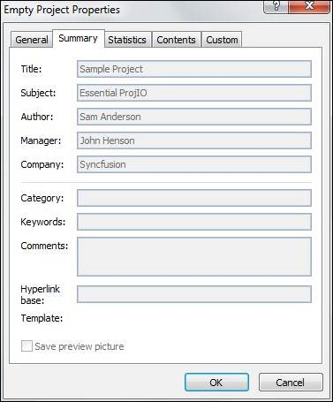

Project class contains properties that can get or set the summary information of a project file in XML format. Using this class, the summary information can be updated and the file can be written back in XML format. The following code shows how this can be done.
|
[C#]
// Calling Read method of ProjectReader to get the Project object Project project = ProjectReader.Open("Sample Project.xml");
// Setting Project Default information project.SaveVersion = 14; project.Author = "Sam Anderson"; project.Manager = "John Henson"; project.Company = "Syncfusion"; project.CreationDate = new DateTime(2011, 10, 8); project.Subject = "Essential ProjIO"; project.Title = "Sample Project";
// Saving the Project project.Save("Empty Project.xml"); |
|
[VB]
' Calling Read method of ProjectReader to get the Project object Dim project As Project = ProjectReader.Open("Sample Project.xml")
' Retriving Project information project.SaveVersion = 14 project.Author = "Sam Anderson" project.Manager = "John Henson" project.Company = "Syncfusion" project.CreationDate = New DateTime(2011, 10, 8) project.Subject = "Essential ProjIO" project.Title = "Sample Project"
' Saving the Project project.Save("Empty Project.xml") |
The project summary information added through the above code can be viewed by checking the Project Information – Advanced Properties in the File menu.

Figure 7: Empty Project Properties